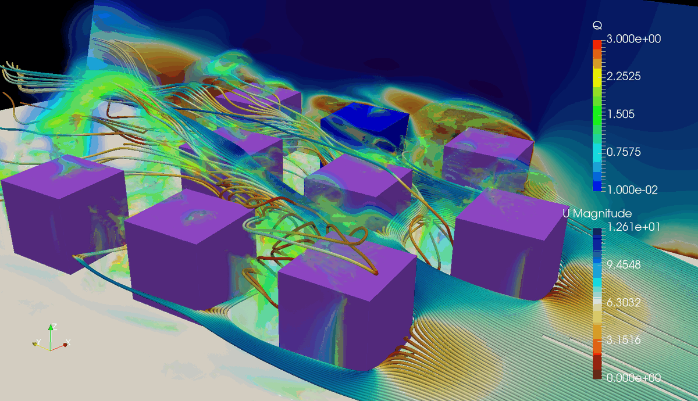
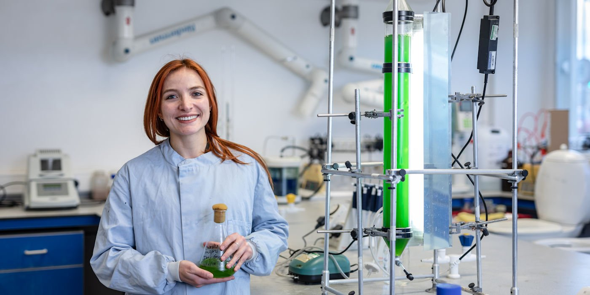
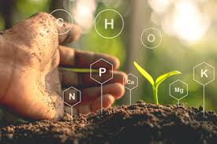
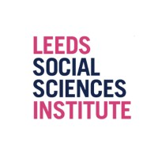
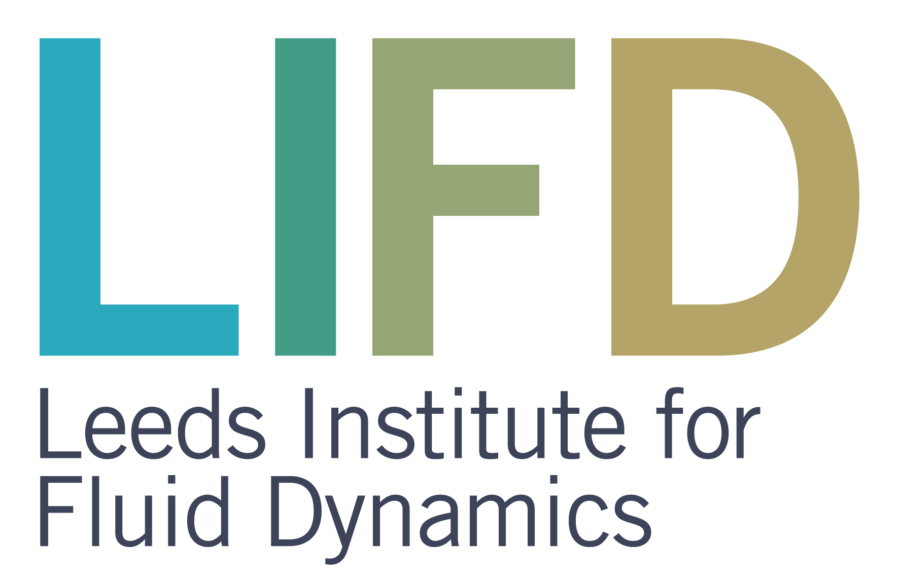
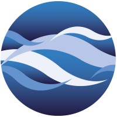
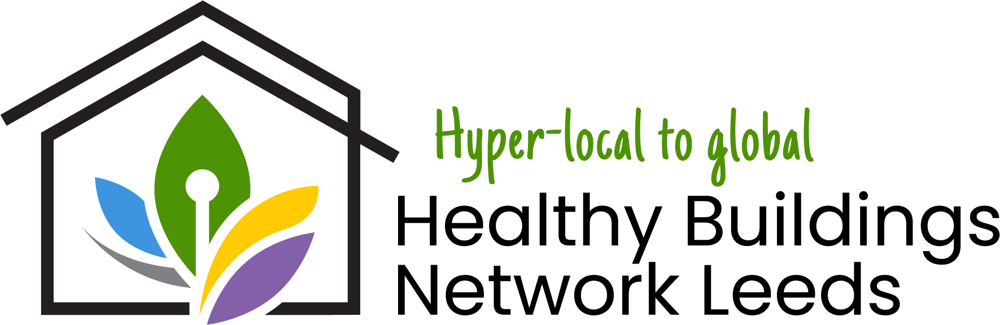

Based in the School of Civil Engineering at the University of Leeds.
Engineering healthy buildings, resilient water and sanitation systems, and circular bioresources.
Our interdisciplinary community brings together 30 academic and research staff and more than 50 doctoral researchers across four core research themes and shared experimental and computational methods.

Backed by £1.75M in Ayrton Challenge Energy funding, our BioCool programme combines solar-assisted anaerobic digestion with an “Energy as a Service” model to deliver off-grid milk cooling for smallholder dairy farmers.
Read More
Combining full-scale aerobiology chamber trials, ward sensor networks, and real-time CFD simulation to understand how respiratory pathogens move through buildings, shaping NHS and WHO ventilation guidance.
Read Impact Story
Co-developed at Leeds, the Shit Flow Diagram (SFD) transformed how over 100 cities diagnose sanitation failures, underpinned UN SDG Target 6.2, and informed over US$1.1 billion in urban sanitation investment.
Read Impact StoryAirborne infection control, building ventilation, bioaerosol sensing, and indoor air quality justice.
Core Theme 2Water supply, treatment, microplastics removal, flood risk, hydraulic transients, and subsurface geochemistry.
Core Theme 3Climate-resilient urban and rural sanitation, wastewater engineering, faecal sludge management, and public health governance.
Core Theme 4Anaerobic digestion, microalgae biorefineries, digestate valorisation, environmental geochemistry, and low-carbon construction materials.
Cross-Cutting ThemeAerobiology chamber testing, environmental microbiology, CFD, physics-informed AI surrogates, QMRA, and LCA across all themes.
Hosted by Dr Marco-Felipe King and Dr Amirul Khan, featuring presentations by I Wayan Arnaya, Khadija, Jiaxian, and Dr Amirul Khan on digital twins and physics-informed machine learning.
Session SummaryRun jointly by academic and ECR staff, our December Cake Meeting will be the WPE Christmas Party (Tuesday 1 December 2026), with 2027 seminar slots open for academic and ECR co-hosts.
View ScheduleFive days bringing together our academic staff, postdocs, technical staff, and doctoral researchers for daily 11:00 AM coffees, the School PGR Conference, CDT panels, and the WPE AGM.
Learn More
Professor Cath Noakes OBE FREng has received the Pettenkofer Award, the highest international honour of the International Society of Indoor Air Quality and Climate (ISIAQ), at Indoor Air 2026 in recognition of her pioneering contributions to indoor air science and public health.

Following a successful Innovate UK feasibility study in Uganda, Dr Cynthia Kusin Okoro-Shekwaga and Dr Miller Alonso Camargo-Valero have secured £1.75M in Ayrton Challenge Energy funding to scale solar-assisted biomethane milk cooling across East Africa.
Dr Marco-Felipe King and Prof. Chuck Gerba (University of Arizona) are partnering with Reckitt on quantitative microbial risk assessment of surface sanitisation in domestic environments, alongside new EMISI Indonesia sanitation climate reports.




April 2026
View PublicationApril 2026
View PublicationApril 2026
View PublicationFebruary 2026
View PublicationFebruary 2026
View Publication2026
View Publication